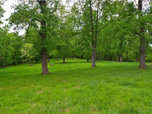
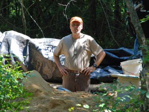

posted: 5/21/2014
Dr. Randolph Daniel Presentation
Friends of Morrow Mountain State Park will present Professor Randolph Daniel at Morrow Mountain State Park on Sunday afternoon May 18th. The program will be from 2:00 pm until 4:00 pm in the park's lodge about the early American Indian history of the Uwharrie region with emphasis on the Hardaway site and the Morrow Mountain area.
Registration is required to attend. To register contact park staff at 704-982-4402 weekdays from 8:30 a.m. to 5:00 p.m.
The photo on the right is the Hardaway site. Its rich Stone Age archaeological history, over 12,000 years old, will be part of the focus of Dr. Daniel's presentation.

{kind=link}
The Hardaway site as it appears today.
credit: Carl Galie - click to enlarge
credit: Carl Galie - click to enlarge
The Uwharrie Mountains and Morrow Mountain in particular played a critical role in the prehistory of the region if not the entire state. Virtually unique in the southeastern United States, the Uwharrie Mountains contain natural outcrops of stone that were critical to the tool making requirements of the earliest inhabitants of North Carolina. The nearby Hardaway site - where an abundance of artifacts made from Morrow Mountain stone have been recovered - is a National Historic Landmark long recognized for its important contributions to understanding the cultural history of the region. This presentation will provide an overview of the history of research associated with both sites and discuss their significance to Southeastern archaeology.
Dr. I. Randolph Daniel Jr. is author of Hardaway Revisited: Early Archaic Settlement in the Southeast. Prof. Daniel has referred to the rhyolite found in the Uwharries and especially the rhyolite found at Morrow Mountain as being - "the righteous rock". Rhyolite was for this region the stone of choice for making tools and spear points for early American Indians. In fact, the desired rhyolite at Morrow Mountain was a primary reason for Paleo and Archaic period peoples to be regular visitors to this area.

{kind=link}
Dr. Daniel knee deep in his work.- click to enlarge
Dr. Daniel is Professor and Interim Chair of the Department of Anthropology at East Carolina University. He received his Ph.D. in anthropology in 1994 from the University of North Carolina at Chapel Hill. His research interests include the archaeology of prehistoric hunter-gatherers in the Southeastern United States, particularly hunter-gatherer adaptations at the end of the last Ice Age. Publications related to that research have appeared in two books, several book chapters, and in journals including American Antiquity, Current Research in the Pleistocene, Southeastern Archaeology, and North Carolina Archaeology. He is also the recipient of the 1999 C.B. Moore Award for Excellence in Archaeology by a Young Scholar in Southeastern Studies by the Lower Mississippi Survey & Peabody Museum, Harvard.
by Vice Chair John D. Young